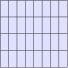
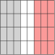
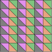

Colouring cells by cell set
using FerriteTikzusing ColorsFerriteTikz only does flat, constant colouring: every cell is filled with a single colour. That is deliberate — it is what mesh, domain and material figures need, and it keeps the emitted TikZ small and hand-editable.
A uniform fill
grid = generate_grid(Quadrilateral, (8, 4))tikzgrid(grid; cellcolor = "blue!12", picturescale = 1.2)
Per cell set colours
cellsetcolors maps names of Ferrite cell sets to colours. Cells that are not in any of the listed sets keep cellcolor:
grid = generate_grid(Quadrilateral, (8, 4))addcellset!(grid, "steel", x -> x[1] <= -0.25)addcellset!(grid, "rubber", x -> x[1] >= 0.25)tikzgrid( grid; cellsetcolors = ["steel" => "gray!35", "rubber" => colorant"#fb9a99"], cellcolor = "white", picturescale = 1.2,)
Pass the sets as a vector of pairs when the order matters: if a cell belongs to several listed sets, the last matching pair wins. A Dict works too, but its iteration order is unspecified, so only use one when the sets are disjoint.
Colour values
Two kinds of colours are accepted:
- an xcolor expression as a
String, e.g."blue!20","red!50!black","white", or any colour name your document defines — passed through verbatim; - any
Colors.Colorant, e.g.colorant"#a6cee3"orRGB(0.2, 0.4, 0.9)— emitted as a\definecolorstatement in the preamble of the picture.
p = tikzgrid(grid; cellcolor = colorant"#a6cee3")print(p.preamble)\definecolor{ftcolor1}{RGB}{166,206,227}This means a qualitative palette can be reused directly:
using Colorsgrid = generate_grid(Triangle, (6, 6))for (i, name) in enumerate(("a", "b", "c", "d")) addcellset!(grid, name, filter(cellid -> mod1(cellid, 4) == i, 1:getncells(grid)))endpalette = distinguishable_colors(4, [RGB(1, 1, 1)]; dropseed = true)tikzgrid( grid; cellsetcolors = [name => c for (name, c) in zip(("a", "b", "c", "d"), palette)], fillopacity = 0.5, picturescale = 1.5,)
fillopacity makes the fills translucent, which is useful when the figure is placed on a coloured background or overlaid on something else.
Fills without a wireframe, and vice versa
drawcells = false drops the wireframe and leaves only the filled cells:
grid = generate_grid(Quadrilateral, (8, 4))addcellset!(grid, "hole", x -> abs(x[1]) < 0.3 && abs(x[2]) < 0.3)tikzgrid(grid; cellsetcolors = ["hole" => "black!70"], drawcells = false, picturescale = 1.2)